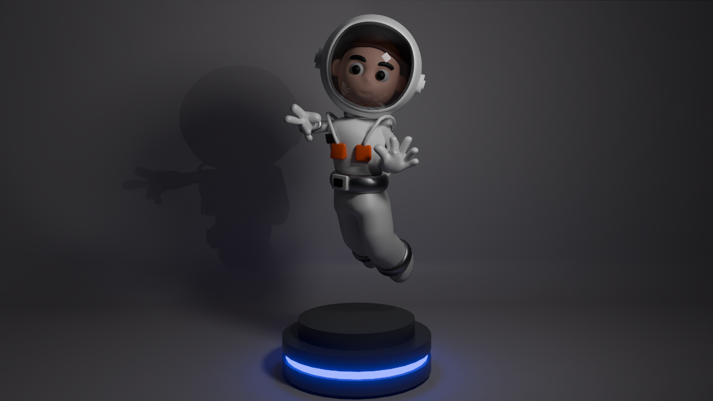
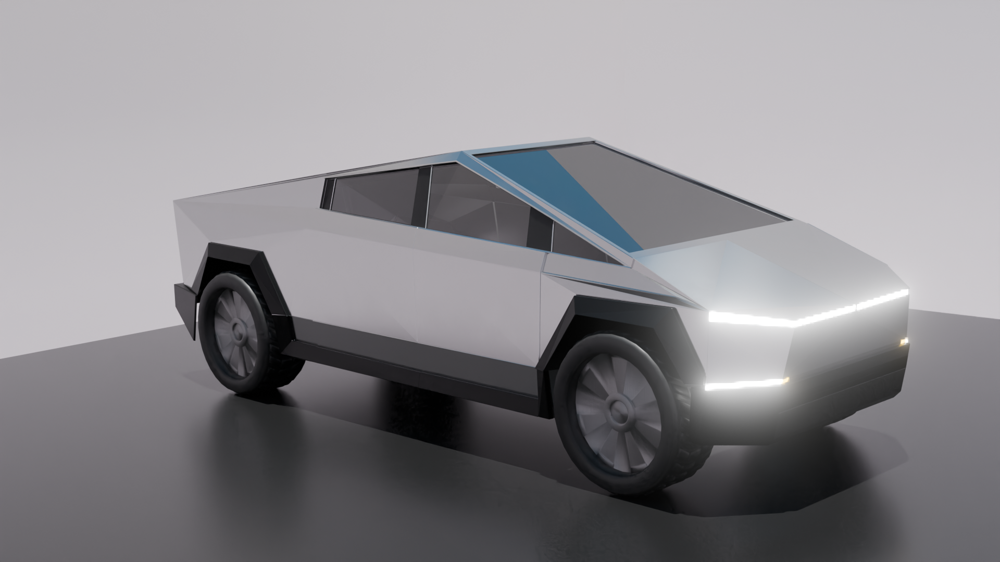
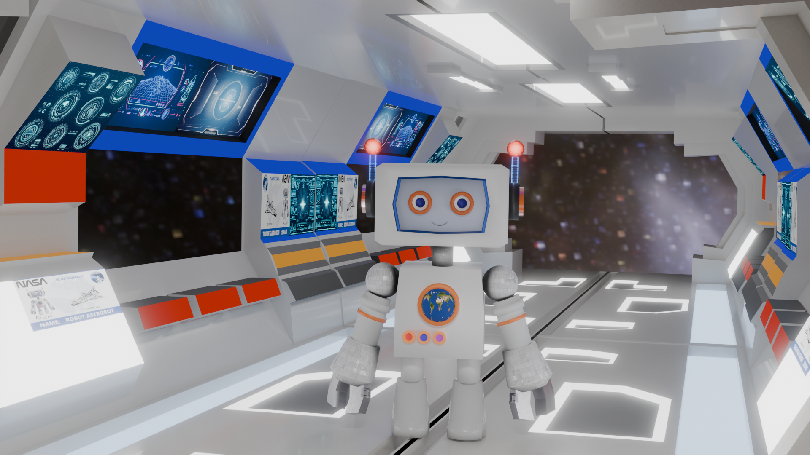
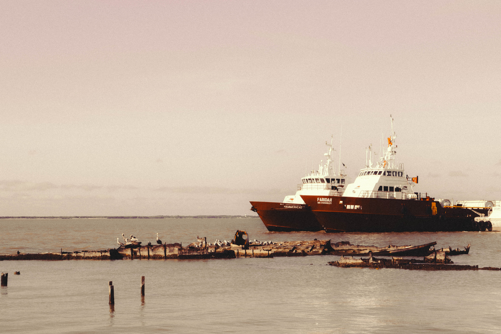
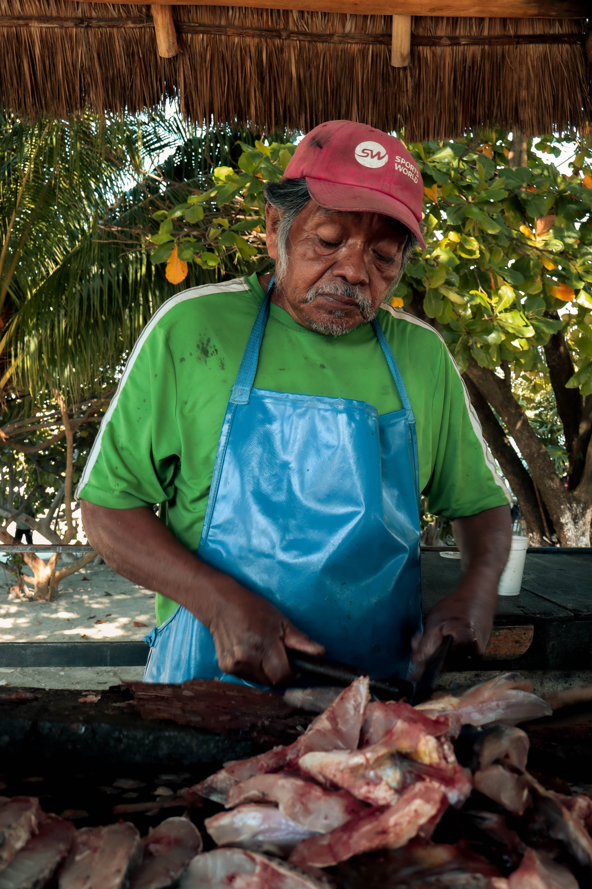

Mi Portafolio







×
Lata de cerveza realizada en Blender.
×
Stella Maris en Ciudad del Carmen, Campeche
La Virgen del Carmen, conocida como Stella Maris, se alza imponente frente al mar, recordándonos su papel como protectora de los navegantes. Este atardecer en el malecón combina fe y naturaleza en un contraste inolvidable.
Fotografía tomada a contraluz para acentuar su omnipotencia, resaltando su silueta como un faro espiritual que guía y protege desde las alturas.